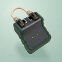
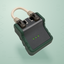
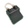
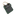
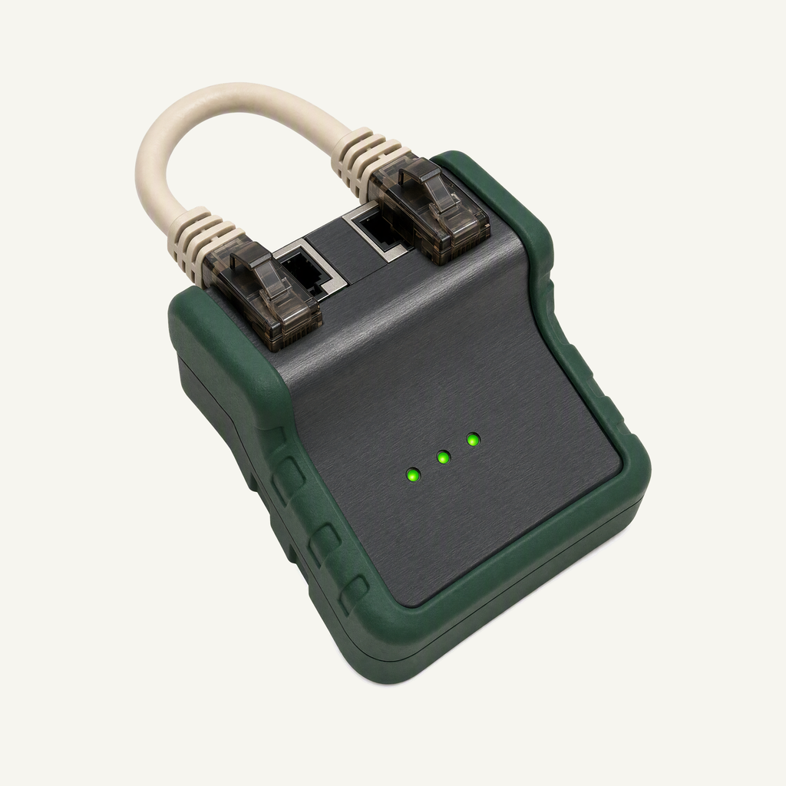
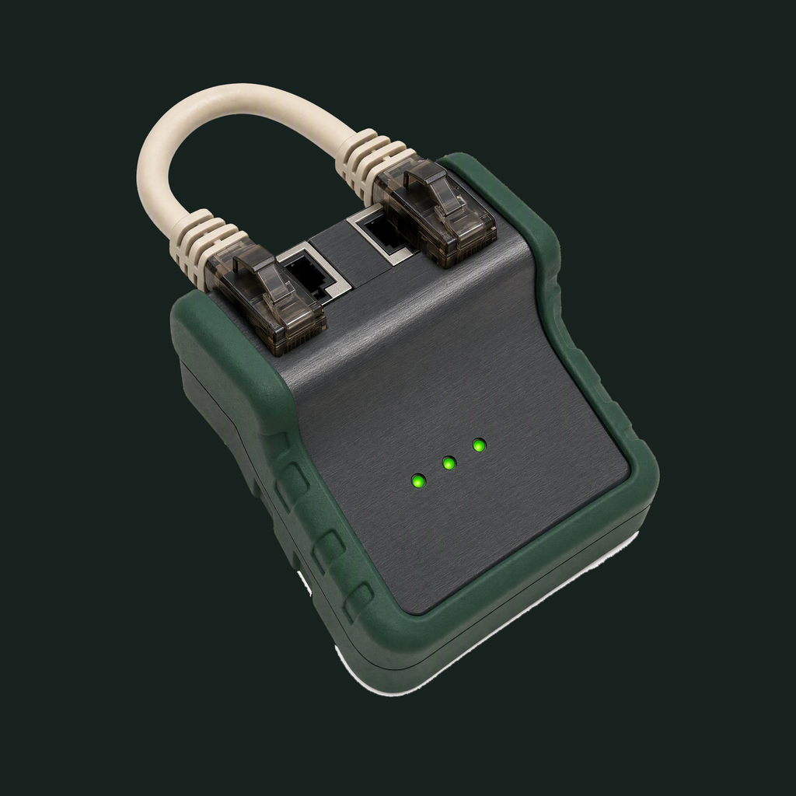

01 / Composition
The connection passes
A compact cable tester holds a short patch lead close to two ports. Three small status lights identify a completed connectivity check before the next command.
Physical-object family · Refined identity
A good connection, before the next command.
Adopted redesign · finishing 01
Native 2048 × 2048
01 / Composition
A compact cable tester holds a short patch lead close to two ports. Three small status lights identify a completed connectivity check before the next command.
02 / Drawing
Green molded rubber surrounds a brushed charcoal face. Opaque cream cable and smoky connectors remain physical; the large loop opening is transparent.
03 / Presentation
Paired port rectangles, guarded chevron lanes and three short status bars in quiet mint paper. The field, grain and contact shadow are independent of transparent app marks.
Presentation tiles at 128/64 px; transparent artwork for small app and browser marks.




At 128/64 px, the dark tester and cream cable loop remain clear. At 32/24/16 px, the compact silhouette and dominant colors carry recognition; fine material detail, printed marks and background lines naturally merge.
A designed background, with colors sampled from the exact native artwork.
Select a swatch to copy its hex value. Artwork colors and platform system colors are documented separately.
One transparent foreground, checked on two contrasting backgrounds.


Azure Foundry · gpt-image-2 · one request · native 2048 × 2048
Loading study text…
Approved material study: physical-render quality and clean isolated edges only, not block geometry or checker colors. Owner presentation board: tactile material and balanced offset framing; backdrop composed separately. Owner presentation detail: refined tonal contrast and quiet relief; never copy another project's motif.


{kind=link}
{kind=link}
{kind=link}
{kind=link}
{kind=link}